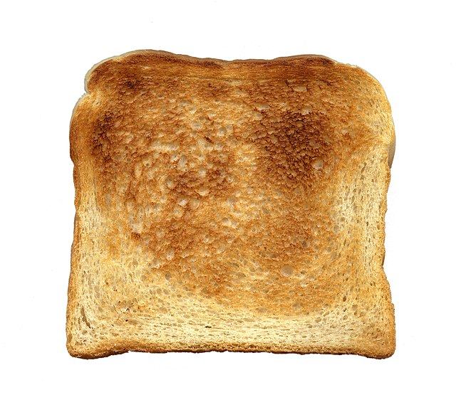

Toast

a slice of toast
Ingredients
Steps
- Take your bread, and assess whether it has been sliced before the bread came into your orbit.
- If the bread has not previously been sliced, then take out a sharp or serrated knife and lay the Bread on an appropriate cutting surface like a clean wooden or plastic board.
- Using the knife, cut a slice of bread to the thickness of toast that you prefer.
- Assess whether there is a toaster in your vicinity or conveniently available to yourself, and place the slice of Bread in the toaster. Set the time on the toaster dependent on how toasty you like your toast, press the level on the toaster to sacrifice your bread to the toast gods. If the toast gods are satisfied with your offering a slice of toast will pop up from the toaster. Remove and enjoy.
- If you do not have a toaster available to yourself, assess whether you have a broiler conveniently accessible. If you do, turn on the broiler and place the bread on an appropriate and clean tray underneath the broiler until it is sufficiently toasted. If you like both sides to become toast, flip the Bread/Toast hybrid over and place under the broiler again until it has become sufficiently toasty. Remove and enjoy.
- If you do not have a toaster, or a broiler available to yourself consider whether you have the capacity to get one for yourself and use the previous steps to transform your Bread into Toast. If not and you have a match you can light, hold the lit match underneath your toast moving it around until it is sufficiently toasty to your tastes. Enjoy your toast.